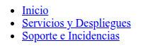
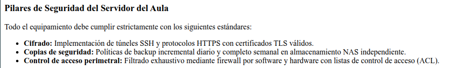
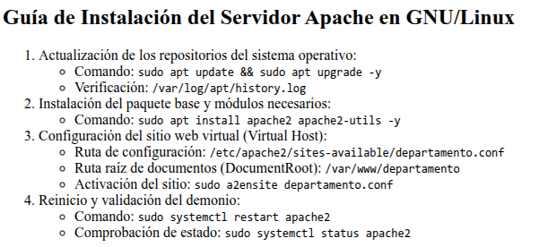
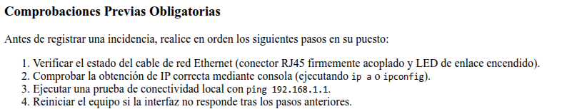
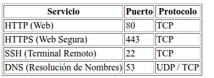
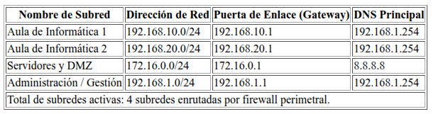
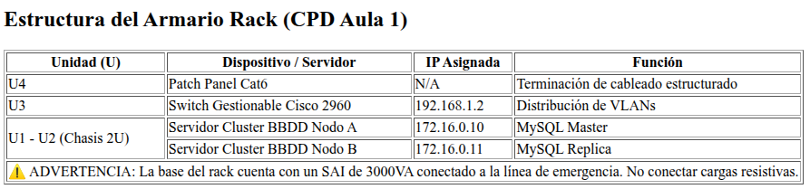
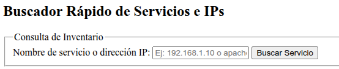
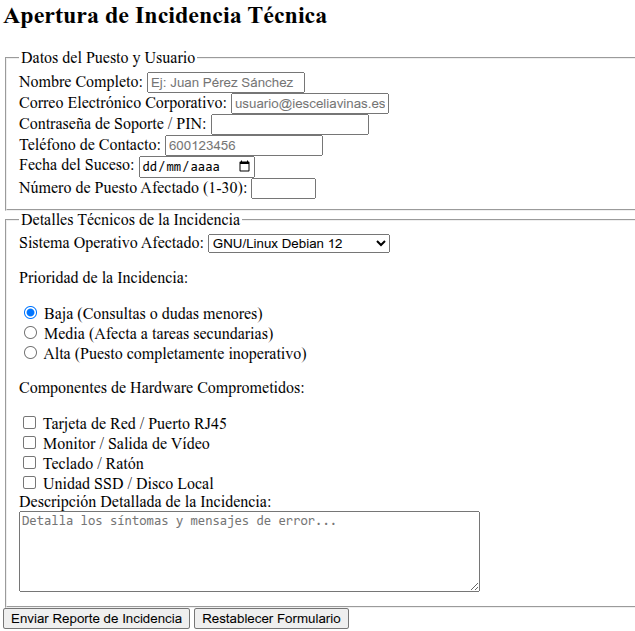

Tarea 1. HTML
FICHA TÉCNICA DE LA ACTIVIDAD ¶
| Unidad Didáctica | UT1: Introducción a las aplicaciones web |
| Resultado de Aprendizaje (RA) | RA1: Instala gestores de contenidos, identificando sus aplicaciones y configurándolos según requerimientos (enfocado en la comprensión íntima de la estructura del código HTML del frontend). |
| Criterios de Evaluación (CE) | CE 1.d: Se ha personalizado la interfaz del gestor de contenidos. CE 1.g: Se han instalado y configurado los módulos necesarios (analizando la estructura del código fuente). |
| Tiempo Estimado | 10 horas |
MÉTODO DE ENTREGA Y FORMATO ¶
|
|
Nota: El código fuente debe estar validado. La autoría se verificará mediante defensa práctica en el aula, donde se solicitará al alumno realizar modificaciones en tiempo real.
1. DESCRIPCIÓN GENERAL. OBJETIVOS 📖 ¶
Como administradores de sistemas microinformáticos, el dominio absoluto del lenguaje de marcado HTML5 es una habilidad crítica. Nos permite personalizar paneles de control, depurar plantillas en gestores de contenidos (WordPress, Moodle) y maquetar herramientas internas de monitorización.
El objetivo principal de esta tarea práctica es construir la arquitectura estática de un portal web interno para el departamento de informática del centro. Esta interfaz de tres páginas independientes pero vinculadas servirá como el "plano de construcción" rígido y semántico que daremos formato mediante CSS en la próxima tarea. Se incidirá de forma rigurosa en la separación absoluta entre estructura (HTML) y presentación (CSS).
2. CONSIDERACIONES PREVIAS ¶
Editor de Código: Se trabajará con Visual Studio Code. Queda estrictamente prohibido el uso de editores WYSIWYG.
Rutas Relativas: Todos los enlaces, imágenes y recursos deben direccionarse mediante rutas relativas (ej. imagenes/topologia.png). Si se detecta alguna ruta absoluta local (ej. C:/Users/... o file:///...), la actividad se considerará suspensa.
Validación: Cada documento HTML creado debe validarse con Firefox sin presentar ningún error de marcado estructural.
Originalidad: Se proporciona un documento para ver el posible resultado, pero los títulos, textos deben ser originales e imágenes se tienen que personalizar, NO pueden ser los mismos.
Previsualización: Se facilitarán documentos pdf para previsualizar una posible solución.
3. ACTIVIDADES A REALIZAR ¶
Actividad 1: Arquitectura Semántica HTML5 e Interconexión Estructural ¶
El alumno debe inicializar las tres páginas HTML que compondrán el sitio web:
index.html (Página de inicio y bienvenida).
servicios.html (Documentación de despliegues y servicios).
contacto.html (Formularios de reporte e incidencias).
Requisitos específicos por página:
Estructura Base: Las tres páginas deben contar con la declaración <!DOCTYPE html>, etiqueta <html> con atributo de idioma en español (lang="es"), etiqueta <head> con codificación de caracteres UTF-8 y metaetiqueta viewport para garantizar la adaptabilidad en dispositivos móviles (ver apuntes).
Secciones Semánticas HTML5: En todas las páginas se estructurará el contenido utilizando obligatoriamente las etiquetas estructurales de bloque de HTML5: <header>, <nav>, <main>, <section>, <article>, <aside> y <footer> (deben de abrirse y cerrarse)
Formatos de Texto y Separación: Emplea de manera lógica los encabezados desde <h1> hasta <h3>, párrafos (<p>), líneas horizontales divisorias (<hr>) para separar secciones lógicas y texto preformateado (<pre>).
Interconexión (Menú de Navegación): El <nav> situado en el <header> de cada una de las tres páginas debe contener una lista no ordenada con enlaces relativos exactos para poder navegar entre las tres páginas de forma fluida y cíclica.

Actividad 2: Integración de Listas (Simples, Anidadas y de Verificación) ¶
La documentación del departamento requiere el uso de listas estructuradas para organizar recursos y flujos de trabajo. Implementa los siguientes requerimientos:
Página index.html (Lista Desordenada Simple): Añade una sección con una lista desordenada (<ul>) que enumere los pilares de la seguridad del servidor del aula (Cifrado, Copias de seguridad, Control de acceso perimetral).

Página servicios.html (Lista Anidada Compleja): Documenta los pasos secuenciales para instalar el servidor Apache en Linux. Utiliza una lista ordenada (<ol>) para los pasos principales, y dentro de cada paso secuencial, anida una lista desordenada (<ul>) indicando los comandos exactos o las rutas de configuración correspondientes.

Página contacto.html (Lista de Ordenada Simple): Muestra al usuario un listado ordenado con los pasos de control obligatorios que debe verificar en su puesto informático antes de abrir un ticket de soporte de red (ej. Estado del cable de red, Comprobación de IP).

Actividad 3: Inserción de Imágenes ¶
Inserta una imagen técnica adaptada al contexto en cada una de las páginas de la aplicación:
En index.html: Imagen de la topología de red local (imagenes/topologia.png).
En servicios.html: Imagen descriptiva del estado de los servicios desplegados (imagenes/estado_servicios.png).
En contacto.html: Banner gráfico del departamento de soporte técnico (imagenes/soporte_banner.png).
Requisitos comunes para las imágenes:
Es estrictamente requerido configurar el atributo alt con un texto descriptivo de accesibilidad detallado (no genérico).
Se limitarán las dimensiones físicas de la imagen directamente en HTML mediante los atributos width (máximo 500px) y height de forma proporcional.
Actividad 4: Creación de Tablas de Datos ¶
Debes implementar una tabla técnica en cada una de las páginas web del proyecto, graduando el nivel de dificultad:
Página index.html (Tabla Sencilla): Crea una tabla básica que liste los puertos comunes de red. Columnas: Servicio, Puerto y Protocolo (mínimo 4 filas de datos).

Página servicios.html (Tabla Intermedia): Diseña una tabla de direccionamiento IP de las subredes del centro. Columnas: Nombre de Subred, Dirección de Red, Puerta de Enlace (Gateway) y DNS Principal. Debe usar de manera clara e inequívoca las etiquetas estructurales de tabla: <thead>, <tbody> y <tfoot>

Página contacto.html (Tabla Compleja): Diseña una tabla avanzada que represente físicamente el armario de servidores (Rack) del aula de informática.
Uso obligatorio de rowspan: Debes combinar verticalmente la primera columna de las filas correspondientes a los servidores de bases de datos para indicar que un servidor en cluster ocupa dos unidades de rack de altura físicas (ej. U1 y U2 combinadas).
Uso obligatorio de colspan: En la parte inferior de la tabla, combina horizontalmente todas las columnas para crear una celda unificada de advertencia técnica sobre la alimentación ininterrumpida (SAI).

Actividad 5: Sistemas de Entrada de Datos (Formulario Sencillo vs. Formulario Complejo) ¶
Para habilitar la interacción del usuario en nuestro portal, implementa dos formularios estructurados:
Página servicios.html (Formulario Sencillo):
Construye un buscador interno rápido de IPs o servicios web. Debe constar únicamente de una etiqueta <label> asociada, un campo de entrada de texto (type="text"), un input de búsqueda corporativa y un botón de envío con el texto "Buscar Servicio".

Página contacto.html (Formulario Técnico Complejo):
Crea un formulario avanzado de registro de incidencias técnicas que contenga todas las opciones de interacción soportadas por HTML5:

Campos de texto obligatorios (required) para el nombre completo y la descripción de la incidencia.
Entradas especializadas HTML5: email (type="email"), contraseña de soporte (type="password"), teléfono corporativo (type="tel"), fecha del suceso (type="date") y número de puesto afectado (type="number").
Un campo de selección desplegable (<select>) para seleccionar el sistema operativo afectado.
Botones de opción mutuamente excluyentes (type="radio") bajo el mismo grupo name para determinar la prioridad del ticket.
Casillas de verificación múltiple (type="checkbox") para seleccionar los componentes de hardware comprometidos.
Caja de texto multilínea (<textarea>) para comentarios adicionales de depuración.
Botón de envío (type="submit") y botón de borrado de datos (type="reset").
4. CALIFICACIÓN ¶
⚠️ IMPORTANTE: El retraso en el plazo de entrega a través de la plataforma, la entrega del documento en formatos editables no permitidos (como .docx), capturas con identificación del alumno/a o la omisión de los enlaces de las fuentes documentales utilizadas penalizará gravemente la nota o invalidará la práctica.
| CE y Puntuación Máxima | Excelente (100% - 90%) |
Adecuado (89% - 50%) |
Insuficiente (49% - 10%) |
No Entregado / Incorrecto (0%) |
|---|---|---|---|---|
C1: Estructuración Semántica y Navegación (Peso: 2.0 Puntos) |
2 Estructura HTML5 en las 3 páginas utilizando adecuadamente <header>, <nav>, <main>, <section>, y <footer>. Sistema de navegación fluido y funcional mediante rutas relativas sin ningún enlace roto. |
1 La estructura semántica está presente pero se omiten algunas etiquetas estructurales o se abusa del uso de <div>. La navegación funciona, pero contiene fallos menores de retorno o rutas incorrectas. |
0.25 La maquetación carece de semántica lógica. No hay una separación estructural y existen múltiples enlaces de navegación rotos o se han usado rutas absolutas locales del disco. |
0 No se realiza la actividad, los archivos están vacíos o no cumplen con los requisitos mínimos de estructuración del portal. |
C2: Listas e Imágenes Técnicas (Peso: 2.0 Puntos) |
2 Se implementan los tres tipos de listas (simple y anidada). Imágenes en cada página usando atributos de accesibilidad alt |
1 Falta alguna lista o imagen, o el anidamiento de las listas contiene errores menores. Los atributos alt son demasiado escuetos o genéricos. |
0.25 Estructura de listas rotas o mal cerradas. Imágenes no mostradas (por rutas erróneas o por no estar guardadas en la subcarpeta. Ausencia total de textos descriptivos. |
0 No se incluyen listas ni imágenes en ninguna de las páginas del proyecto. |
C3: Tablas de Datos (Peso: 2.5 Puntos) |
2.5 Tres tablas correctamente distribuidas según nivel de dificultad. Uso semántico de <thead>, <tbody> y <tfoot>. Aplicación perfecta de rowspan en el rack de servidores y colspan para avisos. |
1.25 Se incluyen las tres tablas pero presentan errores menores en la definición semántica de su estructura. La tabla compleja tiene alguna celda desalineada debido a un uso impreciso de rowspan o colspan. |
0.5 Tablas incompletas, rotas o mal estructuradas. No se aplican de forma correcta los atributos de combinación de celdas o faltan filas completas de datos. |
0 No se incluye ninguna tabla de datos en las tres páginas de la entrega. |
C4: Diseño de Formularios (Peso: 2.5 Puntos) |
2.5 Formularios sencillo y complejo 100% operativos. Asociación unívoca perfecta de todas las <label> con el id de su input mediante for. Validación de entradas nativa y exhaustiva. |
1.25 Ambos formularios son usables, pero carecen de algunas asociaciones semánticas entre etiquetas y campos. Faltan validaciones de tipo de datos requeridos. |
0.5 Formularios mal estructurados, sin botones funcionales de envío o borrado, o con tipos de entrada (type) inapropiados. |
0 Ausencia absoluta de formularios en las páginas servicios.html y contacto.html. |
C5: Validación y Empaquetado del Proyecto (Peso: 1.0 Punto) |
1 Todos los documentos HTML5 pasan la validación. El proyecto se entrega en un único archivo comprimido .zip respetando minuciosamente la jerarquía de carpetas establecida. |
0.5 Se detectan advertencias leves (warnings) en el validador oficial W3C. La jerarquía de carpetas presenta fallos menores de estructuración u organización de nombres de archivo. |
0.1 Errores sintácticos de marcado críticos que impiden la correcta interpretación del navegador. Archivos sueltos o formato de compresión incorrecto (.rar, .7z). |
0 No se entrega el archivo comprimido o no es legible (formato dañado/corrupto). |